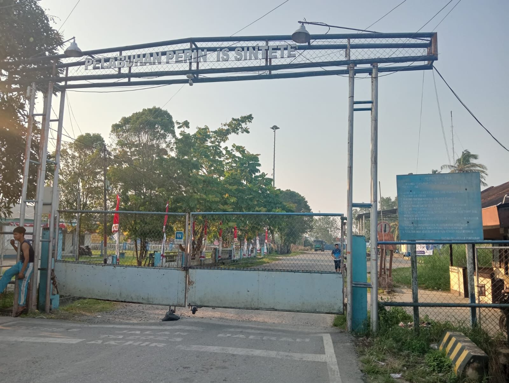
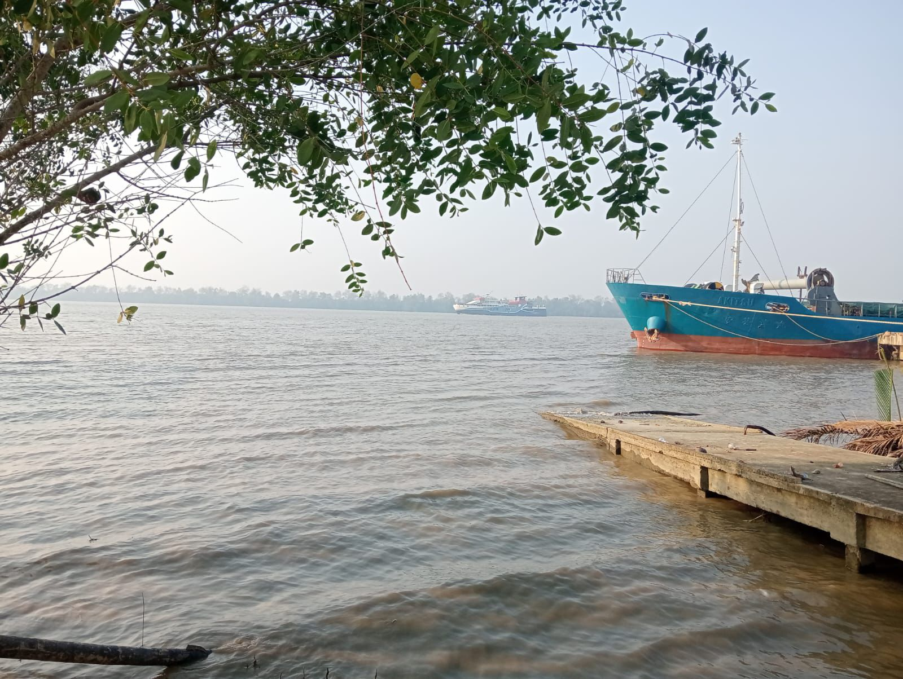

Profil Desa Sintete
Sejarah Singkat Sintete
Sintete merupakan kawasan pelabuhan strategis di Desa Singa Raya, Kecamatan Semparuk, Kabupaten Sambas, Kalimantan Barat. Pada awal abad ke-20, aktivitas maritim dipindahkan dari Pelabuhan Pemangkat ke Sintete karena muara Pemangkat mengalami pendangkalan dan rawan gelombang tinggi.
Sintete dipilih karena perairannya yang dalam, tenang, dan terlindung dari ombak. Setelah kemerdekaan, didirikan pos pengawasan yang kini menjadi Kantor Bea Cukai Sintete. Saat ini, Pelabuhan Sintete menjadi salah satu jalur logistik dan penyeberangan menuju Kepulauan Riau.


Letak Geografis
Sintete terletak di Desa Singa Raya, Kecamatan Semparuk, Kabupaten Sambas, Kalimantan Barat. Berbatasan langsung dengan Sungai Sambas Besar yang bermuara ke Laut Natuna. Letaknya strategis di perbatasan, menjadikan kawasan ini penting untuk perdagangan dan pelayaran.

Data Umum Kawasan
Desa Induk: Singa Raya
Dusun: Sintete
Kecamatan: Semparuk
Kabupaten: Sambas
Provinsi: Kalimantan Barat
*Data RT & RW dari Website Pemerintah Desa Singa Raya. Total penduduk Desa Singa Raya: 9.106 jiwa (sumber resmi 2026).